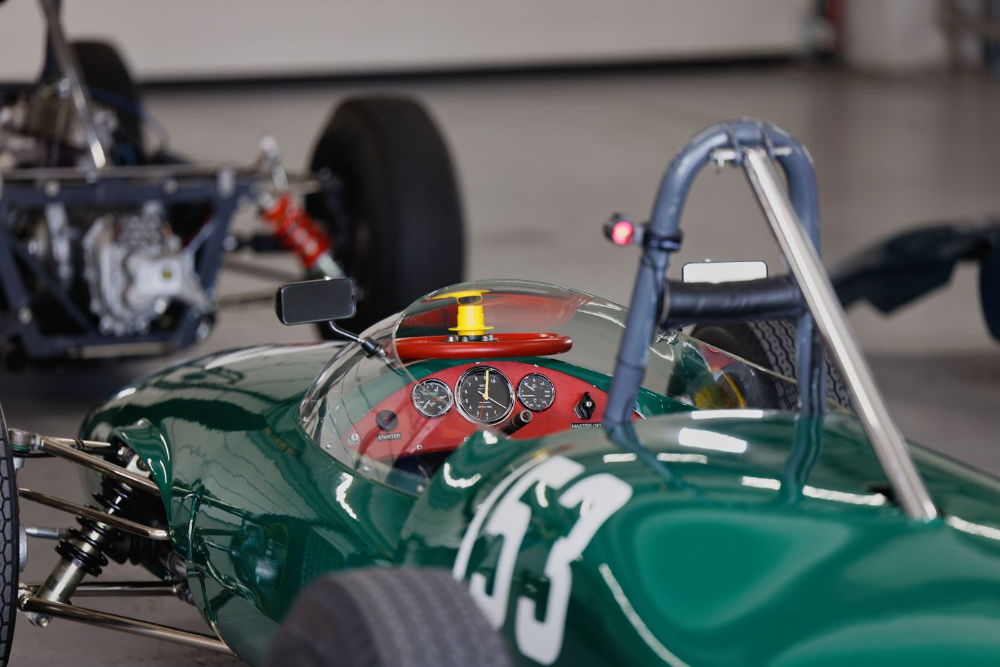
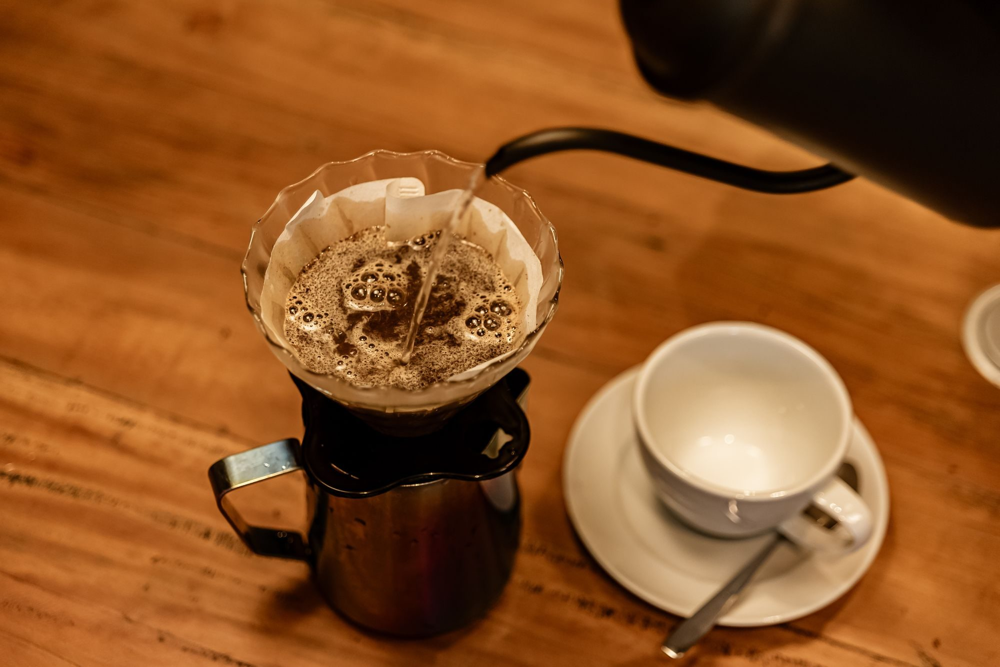
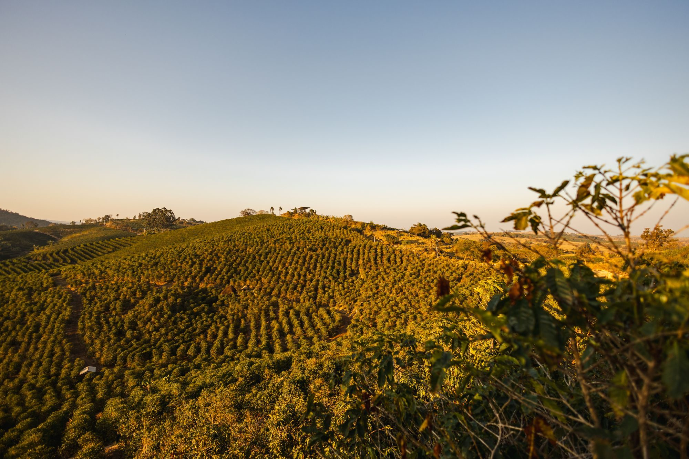
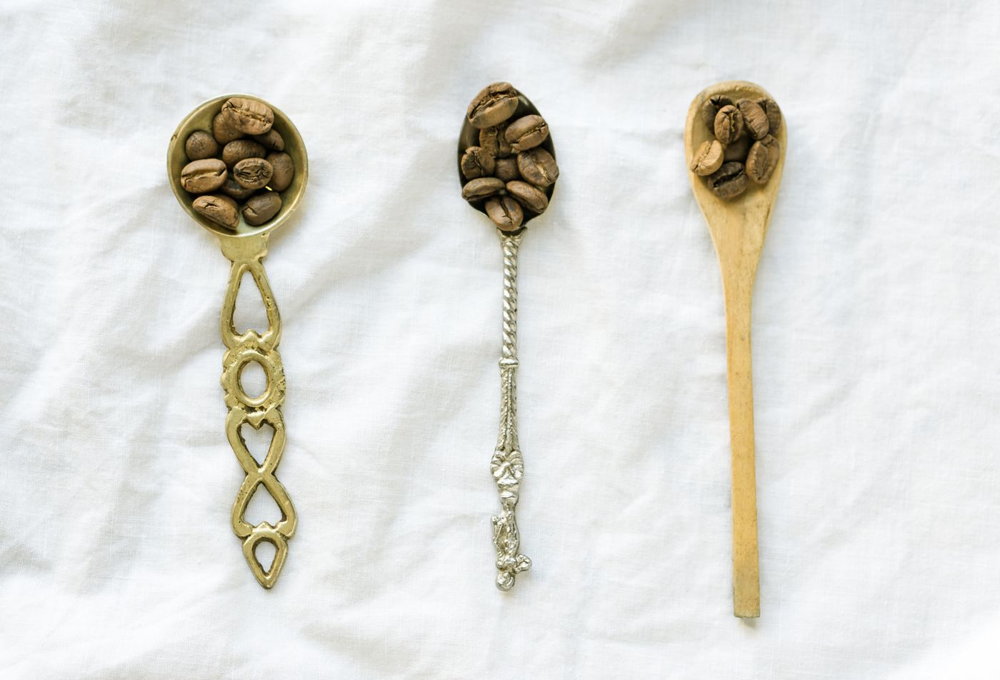
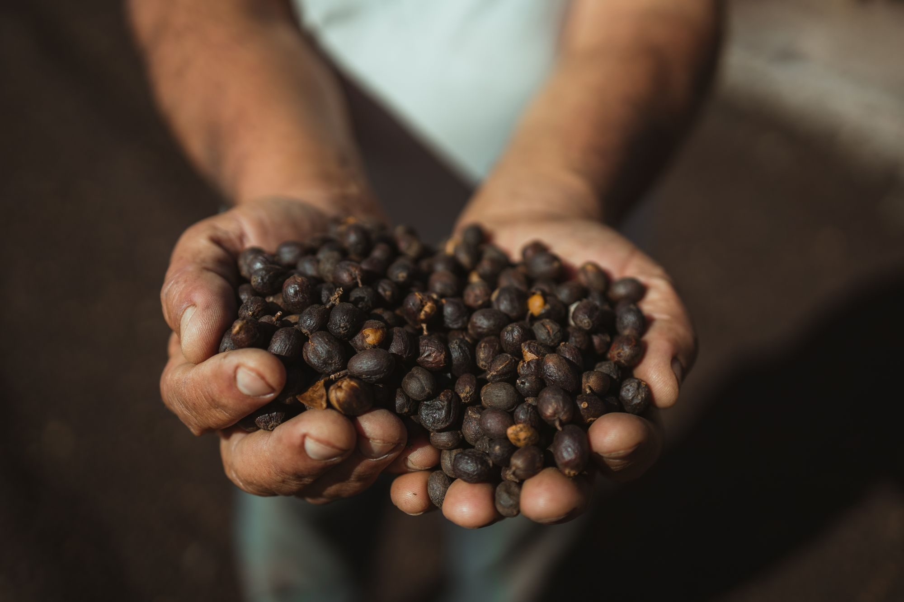
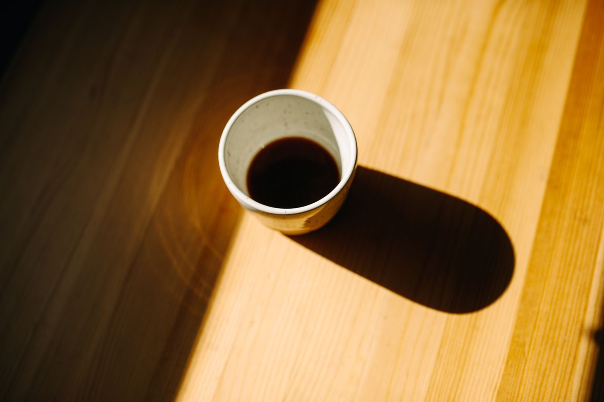

Uma pausa
entre corridas.
Nos boxes, entre um treino e outro, era sempre o café que marcava a pausa. Foi ali, longe da pressa da pista, que a ideia de uma marca própria começou a tomar forma.
Nossa origem
Sobre o tempo que um bom café pede e sobre quem decidiu esperar por ele.

Sou Cecília Rabelo, fundadora da ORA Café.
Minha trajetória no automobilismo me ensinou que grandes experiências são construídas nos detalhes. A dedicação, a escolha e o cuidado em cada etapa fazem toda a diferença no resultado final.
Foi com esse olhar que nasceu a ORA: de uma vontade antiga de criar algo próprio e de compartilhar uma paixão por bons momentos.
A ORA nasceu com o propósito de aproximar as pessoas de cafés especiais, cuidadosamente selecionados em fazendas de Minas Gerais e escolhidos a partir de uma curadoria que valoriza a origem, a qualidade e a experiência em cada xícara.
Mais do que oferecer café, queremos valorizar pequenos momentos do dia, transformando uma pausa simples em algo especial.
Porque todo momento tem sua ORA.

1.500metros acima do mar
É lá em cima que estão as fazendas parceiras da ORA, escolhidas uma a uma, onde o café é cuidado por famílias que conhecem cada pé pelo nome do talhão.
01 / 04

Nos boxes, entre um treino e outro, era sempre o café que marcava a pausa. Foi ali, longe da pressa da pista, que a ideia de uma marca própria começou a tomar forma.

A busca levou a ORA às montanhas de Minas Gerais. Foram visitas, conversas com produtores e muitas xícaras provadas na varanda das fazendas, até encontrar quem cuidasse do café como ela queria cuidar.

De dezenas de amostras, ficaram duas. Poderiam ser dez, mas a ORA preferiu ter poucos cafés e conhecer cada um de perto.

O pacote preto, o rótulo creme, o grão desenhado como um O. Cada detalhe foi pensado como na pista: nada sobra, nada falta. Então o primeiro lote chegou às mãos de quem divide com a ORA o gosto pelas pausas.
ORA vem de hora: o instante do dia que você reserva para si. E de agora, porque o melhor momento para um bom café é sempre este. Um nome curto para uma ideia simples, que guia cada escolha da marca.

